670 runs sweeping 11 never-measured (or partly measured) mosaic options over four inputs including a non-US one, at morph=True and morph=False, scored with the grid-vs-mosaic metric set plus an integrity screen.
670 runs, 0 errors. Every run is scored by grid-vs-mosaic-similarity/metrics.py, imported unchanged, so the numbers are directly comparable with that workspace (combinatorial Polsby-Popper on the tile adjacency graph; area-based silhouette only). Raw records: results.jsonl (written incrementally, one line per run); full per-value tables: tables.md; scripts: run.py, inputs.py, analyze.py, tables.py, digest.py, spacing_check.py.
Each run also records a **fingerprint**: a hash of (tiles owned by each region, tile size). Two values with the same fingerprint produced byte-identical placements - this is the dead-zone test, and it is what most of the "inert" verdicts below rest on.
11 parameters x (4 to 7 values each, always including the disabled / 0 end where the field allows it) x 5 inputs x {morph=True, morph=False}, plus a 3x5 distance_weight x outside_penalty grid.
carto_flow.data.load_world() in Mollweide (equal-area), Antarctica and zero-population rows dropped, 176 countries, 384 tiles allocated by population. Chosen because its structure is what the US inputs do not have: many single-tile island states, several genuinely disconnected components, region areas spanning four orders of magnitude, and a population-to-area relation that is far more extreme than any US one. It needed one input fix - Mollweide reprojection produces self-intersecting rings, so geometries are passed through shapely.make_valid().buffer(0) before use, otherwise the study-union build raises a GEOS side-location conflict.
All defaults, per input. Columns: non-contiguous regions / split groups / unassigned core tiles / enclosed unassigned tiles / tiles short.
| input | morph | noncontig | split | unassigned core | enclosed | short |
|---|---|---|---|---|---|---|
| states_uniform | True | 0 | 0 | 5 | 0 | 0 |
| states_uniform | False | 0 | 0 | 0 | 0 | 0 |
| states_uniform_sq | True | 0 | 0 | 10 | 0 | 0 |
| states_uniform_sq | False | 0 | 0 | 1 | 0 | 0 |
| states | True | 0 | 0 | 19 | 0 | 0 |
| states | False | 0 | 0 | 3 | 0 | 0 |
| districts | True | 0 | 0 | 54 | 0 | 0 |
| districts | False | 0 | 0 | 14 | 0 | 0 |
| **world** | True | 0 | 0 | 96 | 5 | **11** |
| **world** | False | **2** | 0 | 34 | 1 | **18** |
The world baseline is not clean at defaults: at morph=False two regions are already non-contiguous, and at both morph settings 11-18 requested tiles are never placed. No US input shows either defect at defaults. Every world verdict below is therefore relative to an already-defective starting point.
| parameter | verdict |
|---|---|
outside_penalty | **measurably changes results** - every value a distinct placement on all 10 input x morph combos; **pathological**: sign flip across inputs, and on districts/morph=False every non-default value is disqualified |
distance_weight x outside_penalty (joint) | **measurably changes results**; **pathological**: not scale-free - equal-ratio pairs never agree (0/32) |
max_connectivity_iters | **measurably changes results only at morph=False**; **pathological**: inert at morph=True on all 5 inputs, saturated at 2, default 15 |
disconnected_penalty_mult | **pathological**: effectively binary (0 vs anything), and inert on 8 of 10 combos |
gap_bridge_mult | **inert** - byte-identical results for 0.0 / 1.0 / 2.0 / 5.0 / 20.0 on all 10 combos |
disconnected_score_weight | **inert** - byte-identical results for 0 / 1 / 10 / 100 / 1000 on all 10 combos |
swap_repair_passes | **measurably changes results** (integrity only); **pathological**: saturated at 2-5, default 10 |
ring_swapback_max_hops | **measurably changes results**; **pathological**: sign flip across inputs, default above the fidelity optimum on states_uniform, and 32 re-introduces a defect on districts |
extra_tile_rings | **measurably changes results**; **pathological**: non-monotone, 0 starves the pool, >=2 breaks integrity on every input, runtime up to 7x |
min_overlap_frac | **measurably changes results**; **pathological**: non-monotone with the fidelity optimum disqualified on integrity |
spacing | **inert** with respect to layout - identical assignment, identical tile size, identical every metric; it only scales the drawn symbol |
tile_size (override) | **measurably changes results**; never cleanly better than calibration - every improvement in the sweep came with an integrity defect |
Any value introducing a split group, a non-contiguous region, or a region short of tiles, relative to that input's own baseline.
| parameter | disqualified values |
|---|---|
outside_penalty | states/morph=False: 10.0 (2 noncontig). districts/morph=True: 4.0. **districts/morph=False: 0.0, 0.25, 0.5, 2.0, 4.0, 10.0 - i.e. every non-default value** (1-2 split groups each). world/morph=True: 2.0, 4.0, 10.0. world/morph=False: 4.0, 10.0 (3 noncontig each) |
distance_weight x outside_penalty | districts/morph=True: 5 of 14 cells. districts/morph=False: 10 of 14. world/morph=True: 7 of 14. world/morph=False: 7 of 14. distance_weight != 1.0 is disqualified far more often than it is not |
max_connectivity_iters | states/morph=False: 1 (2 noncontig). districts/morph=False: 0 and 1 (1 split group) |
disconnected_penalty_mult | none |
gap_bridge_mult | none |
disconnected_score_weight | none |
swap_repair_passes | states/morph=False: 0 (5 noncontig), 1 (4), 2 (3). districts/morph=True: 0 (8 split groups), 1 (1). districts/morph=False: 0 (12 split groups), 1 (4), 2 (3), 5 (2). world/morph=True: 0 (4 noncontig), 1 (1). world/morph=False: 0 (5), 1 (4), 2 (3) |
ring_swapback_max_hops | districts/morph=True: 0, 1. districts/morph=False: 0 **and 32** (1 split group). world/morph=True: 0, 1, 2. world/morph=False: 0 (4 noncontig) |
extra_tile_rings | states/morph=True: 2, 3, 5. states/morph=False: 0 (1 tile short), 3 (4 noncontig). districts/morph=True: 3, 5. districts/morph=False: 0, 2, 3, 5. world/morph=True: 0, 2, 3, 5. world/morph=False: 0, 2, 3, 5. **Only the default 1 is clean on all five inputs** |
min_overlap_frac | states/morph=True: 0.75. districts/morph=True: 0.02, 0.5, 0.75, 1.0. districts/morph=False: 0.25, 0.5, 0.75, 1.0. world (both): 0.02 (morph=True), 0.25, 0.5, 0.75, 1.0 |
tile_size | states: x1.25 (1 tile short). districts/morph=True: x0.9, x1.25 (57 short). districts/morph=False: x0.8, x0.9, x1.1, x1.25 (62 short). world/morph=True: x0.8, x0.9, x1.1, x1.25. world/morph=False: x1.1, x1.25 |
The pattern from the previous round repeats: **the values with the best fidelity numbers are repeatedly the disqualified ones.** Examples in this sweep:
min_overlap_frac = 0.5 on districts/morph=False gives the best silhouette IoUof the whole curve (0.926 vs 0.857 at the default) and the best IoU on world too (0.656 vs 0.542) - and introduces split groups on both.
tile_size x1.25 on districts/morph=False cuts median displacement from 7.29to 4.22 tiles and raises adjacency from 0.485 to 0.560 - by leaving 62 requested tiles unplaced.
extra_tile_rings = 5 on districts/morph=False halves displacement(7.29 -> 4.62) while producing 6 split groups and collapsing IoU to 0.561.
Live on every input: all seven values give distinct fingerprints in 9 of 10 combos (the exception is states_uniform_sq/morph=True, where {0.0, 0.25, 0.5} collapse into one group and {1.0, 2.0} into another - a small dead zone straddling the default).
Effect is large and directional for adjacency: on world/morph=True adjacency kept falls monotonically 0.631 -> 0.482 from outside_penalty 0 to 10, and on districts/morph=True 0.552 -> 0.434. Displacement is the opposite story on the US inputs, where the default 1.0 is a local minimum (states/morph=True: 2.56, 2.63, 2.56, **2.10**, 2.58, 2.58, 2.70) - a one-point trough, the same shape that made interior_bonus unsafe to interpolate.
**Sign flip across inputs.** On world/morph=True, 0.0 is better than the default on *both* headline axes (displacement 3.30 vs 3.85, adjacency 0.631 vs 0.544). On states/morph=True, 0.0 is worse on displacement (2.56 vs 2.10) and better on adjacency. A single recommended direction cannot be stated.
**Integrity.** On districts/morph=False, the default 1.0 is the only value that does not split a group. On world, everything at or above 2.0 adds a non-contiguous region.
The distance_weight docstring says "fix at 1.0 and tune outside_penalty relative to it". That phrasing implies only the ratio matters. **It does not.** Across 32 equal-ratio comparisons (e.g. (dw=0.25, op=0.5) vs (dw=1.0, op=2.0), and (dw=0.25, op=0.0) vs (dw=1.0, op=0.0) vs (dw=4.0, op=0.0)), **not one pair produced the same placement**. That is expected from the code - the cost is distance_weight*dist + outside_penalty*outside - interior_bonus*connectivity, and interior_bonus (2.0) and the neighbour term (0.3) are absolute, so scaling the first two terms together changes the balance against the other two. The advice as written is therefore not just unhelpful, it is wrong about the parameterisation.
Measured jointly, distance_weight != 1.0 is disqualified on integrity in 24 of 40 off-default cells on districts and world.
**Morph-dependent, and this is the cleanest morph dependence in the sweep.** At morph=True, all six values (0, 1, 2, 5, 15, 30) are byte-identical on all five inputs - the connectivity repair loop never fires after a morph. At morph=False it fires, but converges immediately: the identity groups are {0} {1} {2, 5, 15, 30} on states and districts, {0} {1, 2, 5, 15, 30} on states_uniform_sq, and all-identical on states_uniform and world. So the knob has at most two useful settings and saturates at 2; the default is 15.
Disabling it is not free: districts/morph=False at 0 or 1 splits a group and loses 13 points of adjacency (0.485 -> 0.352 at 0).
Runtime note: districts/morph=False at max_connectivity_iters=0 took 16.1 s against 3.5 s at the default - disabling the loop made the run slower, presumably by leaving more work to the downstream repairs.
Values 0, 1, 2, 5, 10, 50 are byte-identical on 8 of 10 combos. On the other two (states/morph=False, districts/morph=False) the identity groups are {0.0} and {1.0, 2.0, 5.0, 10.0, 50.0}: the parameter saturates at its smallest non-zero tested value. It behaves as a boolean, not as a magnitude, and disabling it caused no integrity defect on any input.
**Inert.** 0.0, 1.0, 2.0, 5.0, 20.0 produce byte-identical placements on all five inputs at both morph settings - including turning it off entirely. 50 runs, 10 distinct fingerprints, one per input x morph combo.
**Inert.** 0, 1, 10, 100, 1000 produce byte-identical placements on all five inputs at both morph settings. Its docstring describes it as a tie-break between assignments that split the same number of regions; in 670 runs that tie was never decided by it - a four-order-of-magnitude change moved nothing.
**The earlier evidence holds and extends.** Fidelity is almost untouched (largest median-displacement change across the whole sweep: 0.08 tiles, on world), but integrity moves a lot, and the direction is unambiguous:
| input | morph | defects at 0 | at 1 | at 2 | at 5 | at 10 (default) |
|---|---|---|---|---|---|---|
| states | False | 5 noncontig | 4 | 3 | 0 | 0 |
| districts | True | 8 split | 1 | 0 | 0 | 0 |
| districts | False | 12 split | 4 | 3 | 2 | 0 |
| world | True | 4 noncontig | 1 | 0 | 0 | 0 |
| world | False | 5 noncontig | 4 | 3 | 0 | 0 |
On states_uniform (both tilings) it is inert - there is nothing to repair. The saturation point moves with the input: 2 passes on districts/morph=True, 5 on world/morph=False, 10 on districts/morph=False. The default 10 is at or just past the worst case measured; 30 never differs from 10. Cost of the passes is within noise except on world/morph=False (1.5 s at 0 vs 3.6 s at 10).
Live on every input, and **the most clearly conflicted knob in the sweep**.
*Fidelity says low.* On states_uniform/morph=False, hops 0-4 give median displacement 1.46 tiles and adjacency 0.74; the default 16 gives 2.24 and 0.52. That is a 53% worse displacement and a 22-point adjacency loss at the default, on the gallery input, with **zero integrity defects at any hop value on that input**. Silhouette IoU goes the other way on the same input (0.735 at 0 vs 0.819 at 16), so the trade is real, not a free win - but the default is not at the fidelity optimum for two of the three fidelity axes there.
*Integrity says high.* On districts and world, hops 0-2 introduce split groups or non-contiguous regions (world/morph=True needs >= 4; districts/morph=True needs >= 2). This is the sign flip: the same value that is best on states_uniform is disqualified on world.
*And the top of the range is not safe either.* On districts/morph=False, hops=32 introduces a split group that 16 does not have, while also costing adjacency (0.464 vs 0.485). So the curve is not "more is safer" - it has a defect at both ends.
Dead zones: {8, 16, 32} collapse on states_uniform/states_uniform_sq at morph=True and {16, 32} on several others, but all of 0, 1, 2, 4, 8, 16, 32 are distinct on districts and world - the saturation point moves with input size, as with the grid knobs.
Live everywhere, every value distinct. Three separate problems:
1. **0 starves the pool.** world/morph=False leaves 30 requested tiles unplaced (18 at the default), world/morph=True 24 (11 at the default), states/morph=False 1. The reserve ring is doing real work. 2. **>= 2 breaks integrity on every input** - the only value clean on all five inputs at both morph settings is the default 1. 3. **Non-monotone.** states_uniform/morph=True displacement by ring count: 1.30, 1.53, 1.77, **1.19**, 1.77 - the minimum is at 3, between two maxima. districts/morph=False IoU: 0.906, 0.857, 0.890, 0.638, 0.561 - peak at 0, a dip at 1 (the default), a second peak at 2, then collapse.
Runtime scales badly: districts/morph=True is 6.0 s at the default and 41.3 s at 5; world/morph=False is 3.6 s at the default and 23.0 s at 2.
Live everywhere, every value distinct on all ten combos. The default's stated purpose - let extra tiles into the pool - is visible, but the curve is non-monotone and the good part of it is disqualified.
world/morph=False silhouette IoU across 0.02, 0.1, 0.25, 0.5, 0.75, 1.0: 0.497, 0.542, **0.654, 0.656**, 0.523, 0.341. districts/morph=False: 0.819, 0.857, 0.888, **0.926**, 0.922, 0.829. In both cases the optimum is at 0.25-0.5, three to five times the default - and in both cases those values introduce split groups or non-contiguous regions. Meanwhile 0.02 (lower than the default) is also disqualified on districts/morph=True and world/morph=True.
At 1.0 the layout degenerates on the large inputs (world/morph=True: 1138 unassigned core tiles, IoU 0.209).
**Inert with respect to the layout, by construction.** Assignment fingerprint, tile size, and every one of the ~40 metrics are identical for 0.0, 0.05, 0.2 and 0.5 on all five inputs at both morph settings. In the source it divides each tile's Transform.scale by 1 + spacing and touches nothing else.
Measured directly (spacing_check.py, spacing_check.json): mean transform scale 1.000 / 0.952 / 0.833 / 0.667 and symbol-area ratio 1.000 / 0.907 / 0.694 / 0.444, matching 1/(1+s)^2 to machine precision. Note that result.tiles_gdf is **not** affected - its total area is identical across all four values - so the gap only appears in output that goes through transforms.
Setting tile_size to exactly the calibrated value reproduces the default run byte-for-byte on all ten combos, which confirms calibration is deterministic and that this is a clean single-variable test.
Off-calibration, the answer to "is overriding calibration ever better" is: not without a cost elsewhere. Every value that improved a headline metric also tripped the integrity screen:
districts/morph=False leaves 62 tiles unplaced at x1.25, districts/morph=True 57, world/morph=False 29. Fidelity metrics improve precisely because fewer tiles are placed.
unassigned core tiles at x0.8; world/morph=True gains 3-5 non-contiguous regions.
tiles on IoU (0.588 at x0.8 vs 0.542 calibrated, morph=False) while states_uniform prefers the calibrated size (0.819 vs 0.826 at x0.8 - essentially flat) and districts prefers x0.9 (0.904 vs 0.857).
Yes, three of them, and in two different ways.
max_connectivity_iters and disconnected_penalty_mult are **completely inertat morph=True on all five inputs** and live at morph=False. The morph removes the disconnections these two exist to repair.
swap_repair_passes and ring_swapback_max_hops are live at both settings butthe saturation point differs: districts needs 2 passes at morph=True and 10 at morph=False.
outside_penalty flips sign on displacement between morph settings onworld: at morph=True, 0.0 beats the default (3.30 vs 3.85); at morph=False the best value is 0.25 (6.50 vs 6.58) and 0.0 is the *worst* tested below 4.0 (7.93).
Consistent with the brief's warning about interior_bonus, morph=False is where almost every defect appeared: 9 of the 10 combos with baseline integrity defects or disqualifications at the largest number of values are morph=False runs.
and 11-18 requested tiles never placed at both morph settings. No US input shows either at defaults. Several knob verdicts above ("disqualified") are relative to that already-defective baseline, which US-only measurement cannot see at all.
extra_tile_rings=0 is a tile-starvation failure**, not a fidelitytrade-off: 24-30 unplaced tiles on world against 0-1 on the US inputs. The reserve ring's real job is only visible on an input with many small disconnected regions.
outside_penalty reverses direction.** On world the disabled value 0.0 isbetter on both displacement and adjacency at morph=True; on states it is worse on displacement. Any documented direction derived from US inputs alone would be wrong for world.
0.67-0.86 for US inputs, so metric changes that look small in absolute terms are proportionally much larger there.
dataset is not valid after reprojection to an equal-area CRS and needs make_valid before any union-based work.
interior_bonus, neighbor_weight, neighbor_bfs, morph_options, tilingwere out of scope here (already covered in grid-vs-mosaic-similarity).
distance_weight x outside_penalty were notexplored: every other knob was moved one at a time from defaults. Given that distance_weight x outside_penalty turned out not to be separable, other pairs involving interior_bonus may not be either - untested.
min_overlap_frac appears both as a layout option and as a fixed parameter ofthe core-tile metric. The metric's own value was held at 0.1 for every run, so the "unassigned core tiles" column is a fixed yardstick and is comparable across the min_overlap_frac sweep; it is not the same quantity the layout used internally.
found mosaic deterministic, and the tile_size x1.0 runs reproducing the baseline fingerprint exactly on all ten combos is consistent with that.
min_overlap_frac's default as "deliberately low so extra tilesenter the pool". Lowering it further (0.02) does not continue that trend - it is disqualified on integrity on two inputs, so 0.1 is not simply the low end of a monotone range.
swap_repair_passes and ring_swapback_max_hops as havingpartial evidence to confirm. swap_repair_passes confirmed cleanly. ring_swapback_max_hops did not: 32 - a value above the default, previously untested - introduces a split group on districts/morph=False that 16 does not have, so "higher is safer" does not hold at the top of the range either.
distance_weight docstring's premise (that only the ratio tooutside_penalty matters) is contradicted in all 32 equal-ratio comparisons.
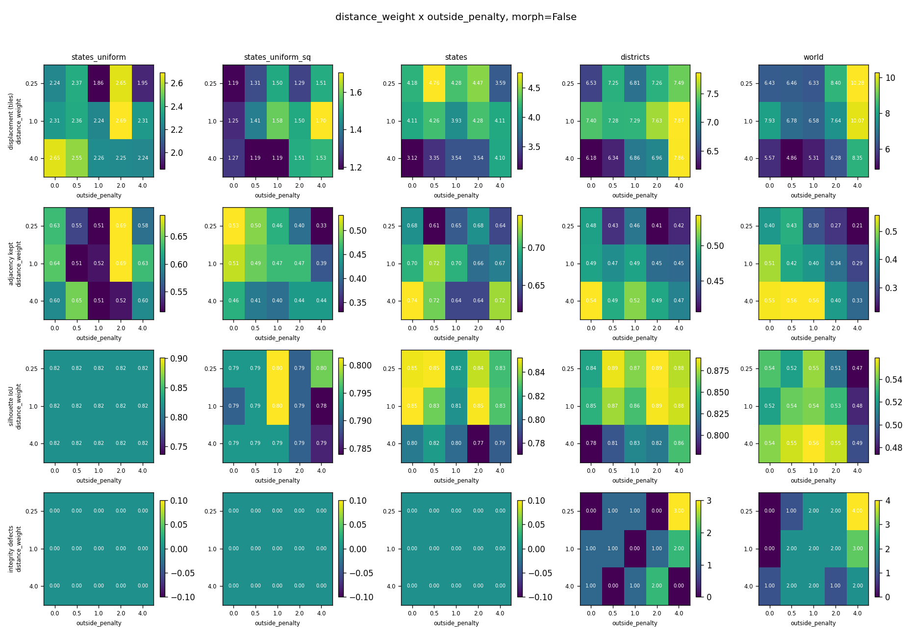
distance_weight x outside_penalty grid, morph=False
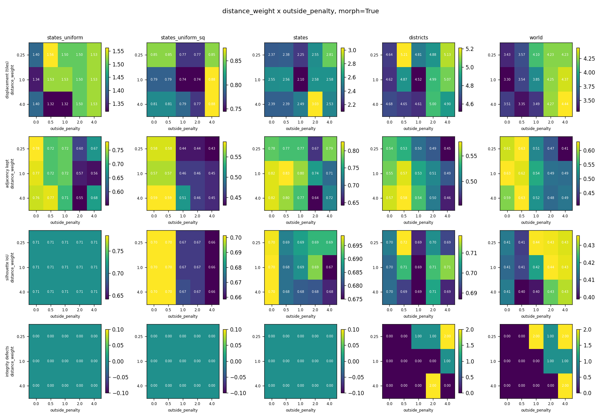
distance_weight x outside_penalty grid, morph=True
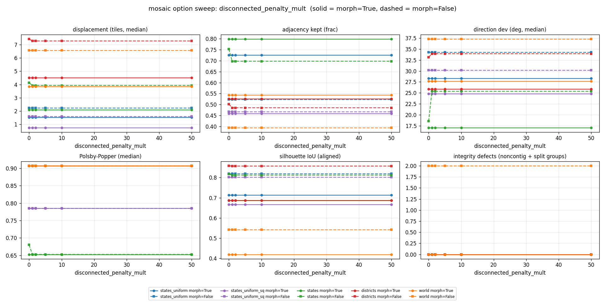
disconnected_penalty_mult: only 0 vs non-0 separates, and only on two inputs
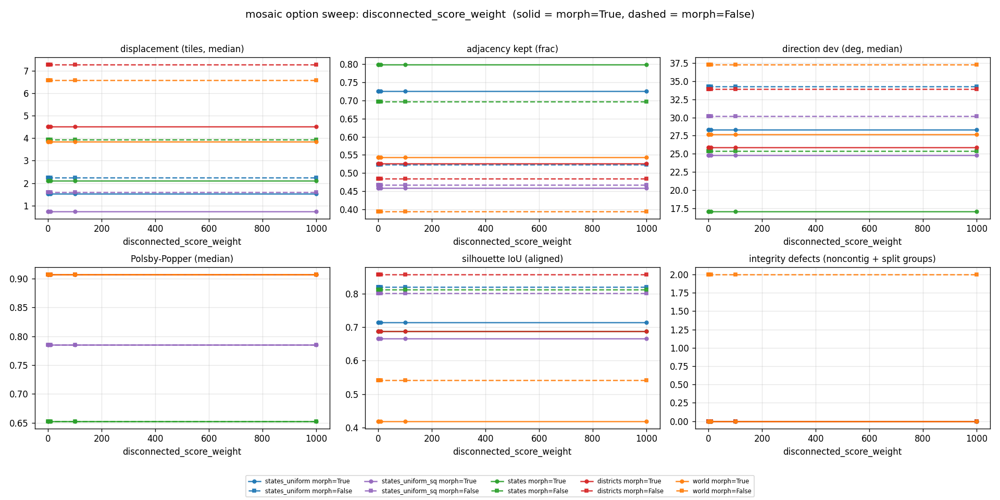
disconnected_score_weight: byte-identical results from 0 to 1000
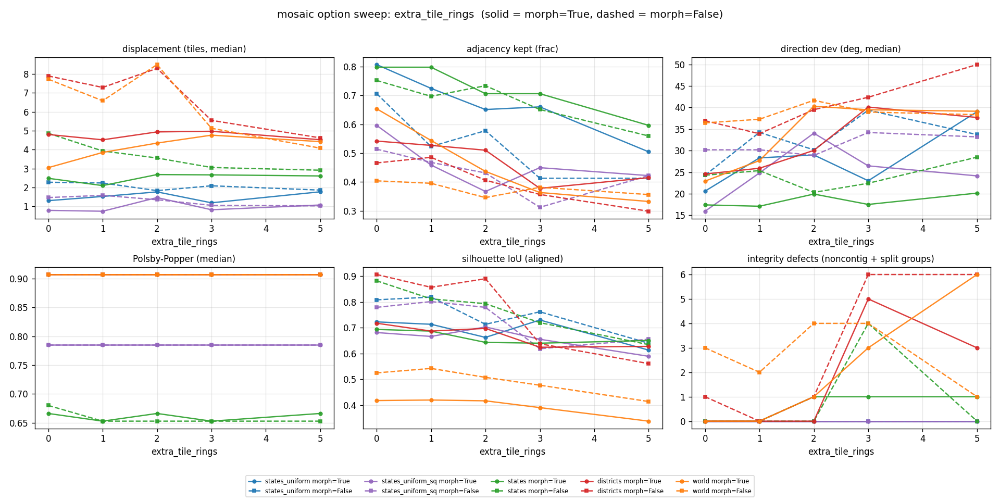
extra_tile_rings
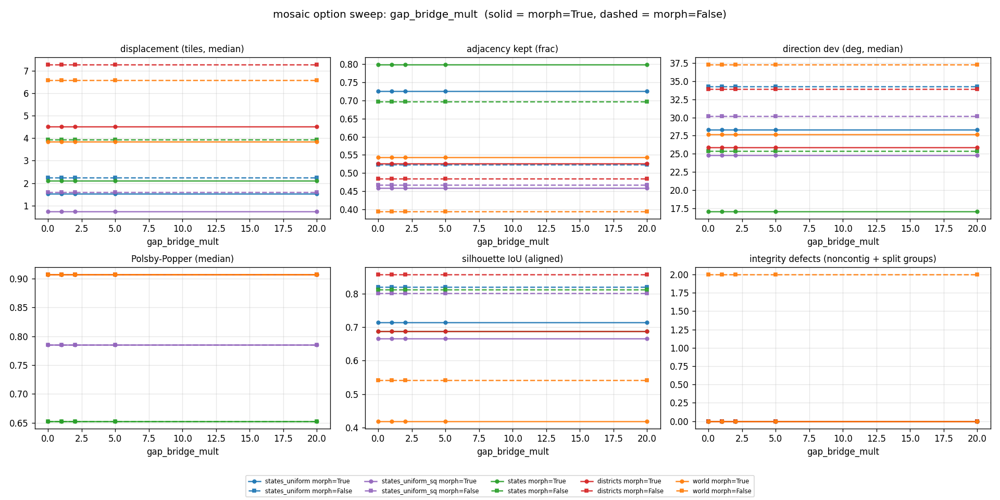
gap_bridge_mult: byte-identical results for every value on every input
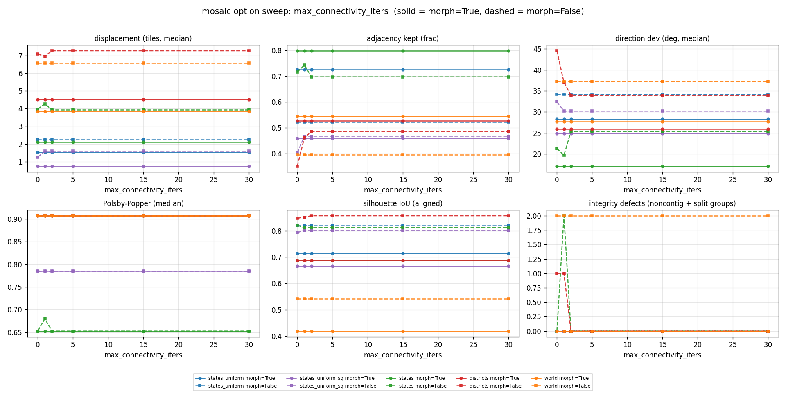
max_connectivity_iters: flat everywhere at morph=True
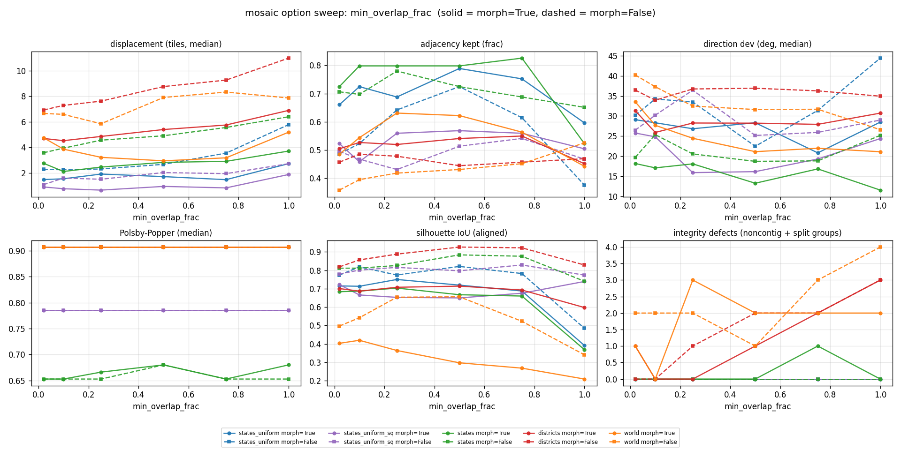
min_overlap_frac
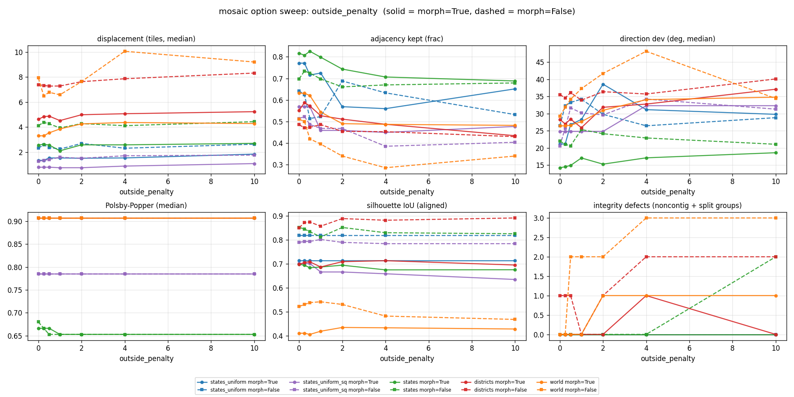
outside_penalty, all five inputs, both morph settings
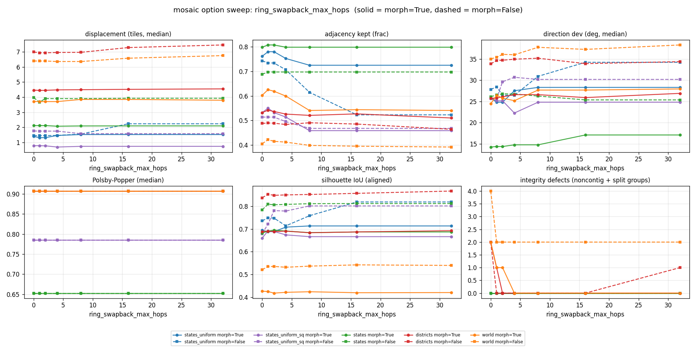
ring_swapback_max_hops: fidelity best at low hops, integrity needs high hops
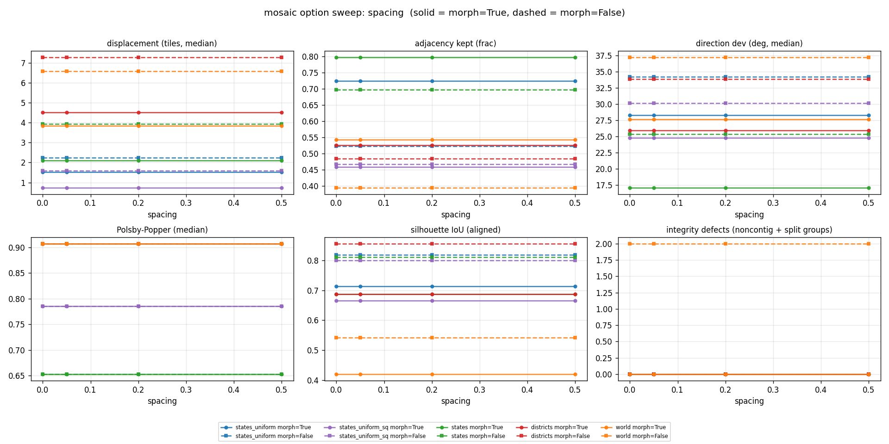
spacing: every metric flat, by construction
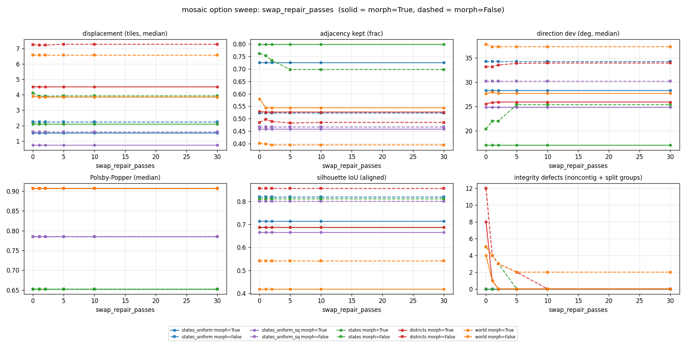
swap_repair_passes: integrity panel moves, fidelity panels do not
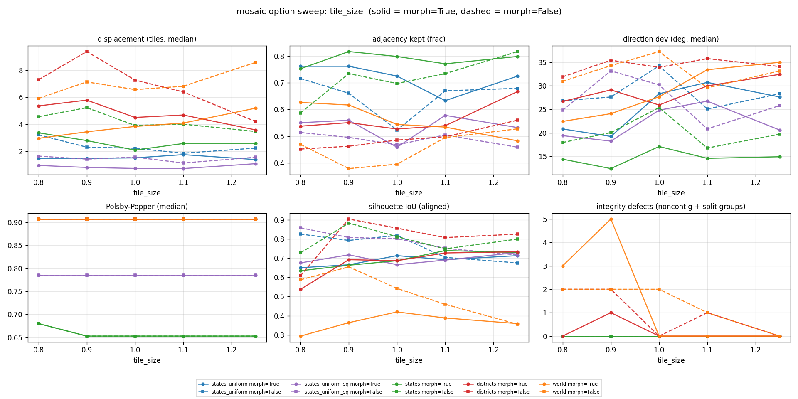
tile_size override, as a multiple of the calibrated size
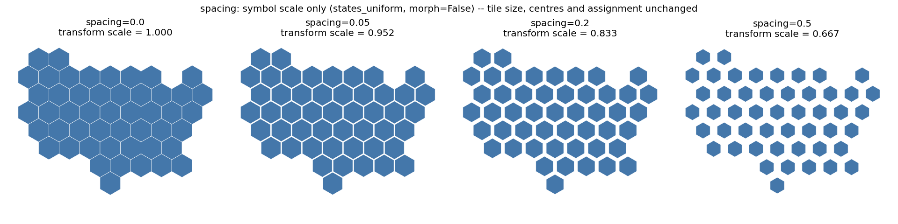
what spacing does change: the symbol scale inside an unchanged tile